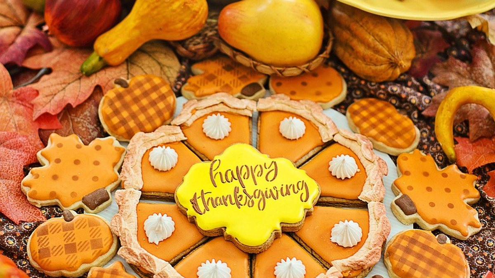
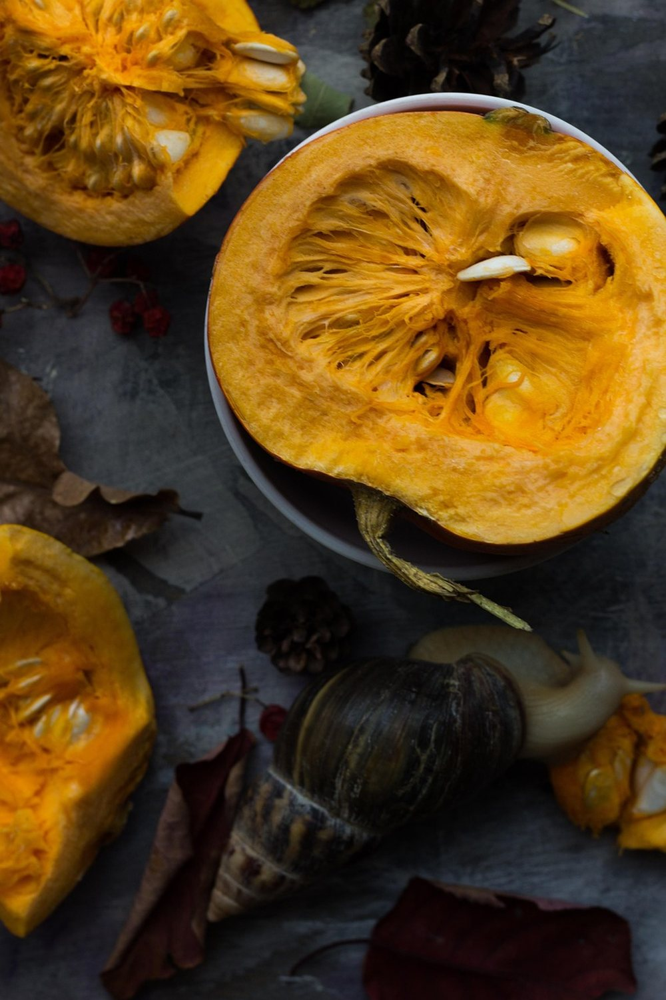

October 28, 2026 · By Pixel Punk Studio
Every Thanksgiving has the same hour. The turkey needs "just a little longer", the adults are busy in the kitchen, and the kids' table is getting louder by the minute. A four-year-old and a twelve-year-old don't want the same thing, and handing out phones means nobody looks up again until pie. The fix is not a big craft project: it is a few quiet activities that each age can do on its own, ready before the first guest arrives. Here are eight that work at a crowded table with no mess and no screens.
Why the kids' table falls apart before dinner
- Hungry and waiting. Kids are told to sit down long before the food arrives. Waiting with nothing to do is the hardest part of the day.
- One activity for every age. A coloring page bores a ten-year-old, and a word search frustrates a preschooler. Each age needs its own level.
- Too much setup. Paint, glue and glitter don't belong near a tablecloth and a gravy boat. The best activities need a pencil and a sheet of paper.
8 quiet Thanksgiving activities for kids
- Word search placemats. Tape a Thanksgiving word search at each older child's place before they sit down. They start searching on their own, and the paper protects the tablecloth too. Readers aged 7 and up can usually manage a full puzzle; give younger readers a list of five words to find instead of all of them.
- Big helps little. Pair an older child with a younger one. The big kid reads each word out loud, the little one hunts for its first letter and circles it. Both stay busy, and the older child feels trusted instead of stuck at the "baby table".
- A coloring corner for the youngest. Ages 3 to 6 need bold lines and big spaces, not detailed pages. A cute animal page they can finish in ten minutes is better than an elaborate one they abandon.
- Place card job. Before dinner, give the kids a stack of folded cards and the guest list. They write (or draw) every guest's name and decorate the cards. It takes a while, it feels like a real job, and the grown-ups love finding their card.
- The thankful leaf chain. Cut strips or leaf shapes from orange, red and yellow paper. Each child writes or draws one thing they are thankful for on each strip, then links them into a chain to hang above the table. Read a few out loud before the meal.
- Farm animal word hunt. Turkeys live on farms, so a farm word search fits right in. Kids aged 6 to 10 can race to find the animals, then guess which animal makes which sound for the younger ones.
- The fun fact quiz. Read a fact and let the table guess: did you know wild turkeys can run up to about 25 miles per hour and fly short distances? Kids love catching the adults out with a fact they didn't know.
- One puzzle until the turkey. Announce that dinner arrives "when the puzzle is done". Kids who finish early can start a second one, and nobody asks "how much longer?" every two minutes.

Pack a kids' table kit
- Pencils and crayons, not markers. Markers bleed through paper onto the tablecloth. Sharpened pencils and chunky crayons are quieter and cleaner.
- One activity per age band. Print coloring pages for the under-sixes, kids' word searches for ages 6 to 10, and a full large print word search for older kids and any grown-up who wants to join.
- A clipboard or a book to lean on for kids who end up on the sofa or the floor.
- Print a few spares. Someone always wants the puzzle their cousin has.
- Set it out before guests arrive. Kids who find something on their plate start right away, before boredom sets in.
Free Thanksgiving printables for the kids' table
Print our free Thanksgiving word search below for the older kids, a farm animal word search for ages 6 to 10, and a puppy and kitten coloring page for the little ones: three levels, one quiet table. For the long weekend, Life on the Farm Word Search for Kids and the Cute Farm Days Coloring Book have dozens more pages, each with a fun fact to share at dinner.